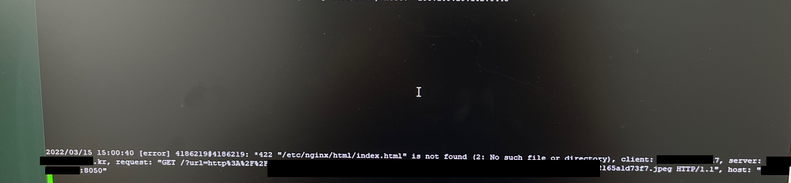

directory index of "..\nginx-1.19.9/html/" is forbidden
2022, Apr 01
nginx
directory index of “C:\Users\Desktop\nginx-1.19.9/html/” is forbidden
problem
nginx를 통해서 url 파라미터로 보낸 url형태의 값을 전송하려고 하는데
만약에 초기 설치에서 index.html파일을 삭제할 경우 나타나는 에러
리눅스의 경우는 에러 메시지가 윈도우와 다름

error log
*422"/etc/nginx/html/index.html" is not found (2: No such file or directory), client: x.x.x.x,
server: xxx.xxx.kr, request: "GET /?url=http%3A%2F%2Fxxx.xxx.com/test/12345.jpeg HTTP/1.1", host: "{nginxIp}:8050"
[기존 nginx.conf]
server {
listen 19013;
server_name localhost;
location ~* ^/(chat|image|file) {
resolver 8.8.8.8;
proxy_pass https://xxx.xxx.co.kr$uri;
}
location ~* ^.+\.(jpg|jpeg|gif|png|ico|css|zip|tgz|gz|rar|bz2|pdf|txt|tar|wav|bmp|rtf|js|flv|swf|html|htm)$ {
rewrite ^ $arg_url permanent;
}
location /ping {
access_log on;
add_header 'Content-Type' 'application/json';
return 200 '{"status":"UP"}';
}
#error_page 404 /404.html;
# redirect server error pages to the static page /50x.html
#
error_page 500 502 503 504 /50x.html;
location = /50x.html {
root html;
}
}
cause
- rewrite ^ $arg_url permanent; 에서 301로 리턴하면서 response를 루트 디렉토리를 통해 index.html 로 리다이렉트되는 것 같다.
solution
- window나 linux 로그에 표시되는 경로에 임의의 index.html을 생성하는 방법
- 서비스 운영 중에 서버가 이전하거나 파일이 생성될 경우, 다시 에러가 발생할 가능성이 크다.
- root디렉토리를 서비스 디렉토리 하위로 변경하는 방법
- 서비스 디렉토리로 옮기면, 그나마 임의로 삭제될 가능성은 적다
- nginx의 기본 root directorysms nginx.exe가 존재하는 path기준으로 설정된다.
- 참고)
Windows: Nginx configuration error GetFileAttributesEx
location / { root D:/tmp/html; index index.html index.htm; if ($request_filename ~* [jpg|jpeg|gif|png|pdf|txt|bmp]$) { rewrite ^ $arg_url permanent; break; } } - 다시 리다이렉트되는 index.html도 301로 리턴되도록 설정한다.
- 참고)
nginx redirect loop, remove index.php from url
server { listen 8051; server_name localhost; **index index.html;** **if ($request_uri ~* "^(.*/)index\.html$") { return 301 $1; }** **location / { rewrite ^ $arg_url permanent; }** location ~* ^/(chat|image|file) { resolver 8.8.8.8; proxy_pass https://xxx.xxx.co.kr$uri; } # Health Check location /ping { access_log on; add_header 'Content-Type' 'application/json'; return 200 '{"status":"UP"}'; } }